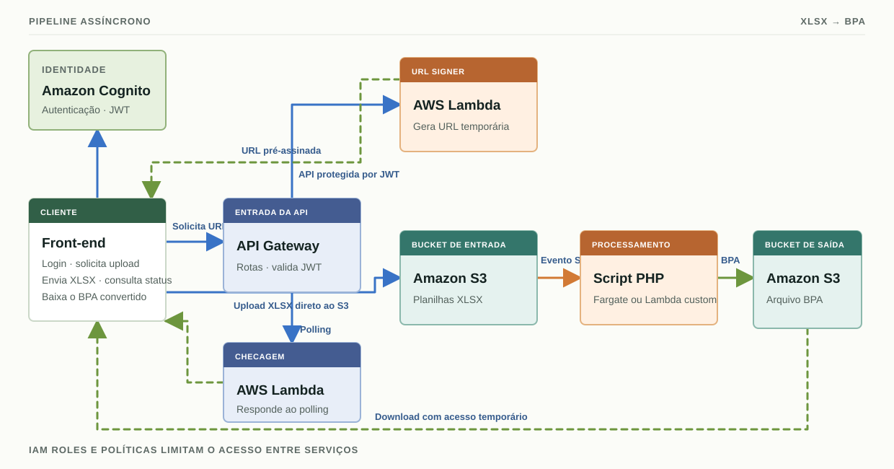

Identidade
Cognito autentica usuários; tokens JWT identificam as chamadas protegidas à API.
AWS · Pipeline de arquivos · PHP
Uma arquitetura orientada a eventos transforma planilhas XLSX em arquivos BPA para processamento no sistema do SUS.
Ver arquiteturaO projeto
O cliente envia uma planilha Excel, acompanha o processamento e obtém o arquivo BPA convertido. O fluxo usa serviços gerenciados da AWS para separar autenticação, transferência de arquivos e processamento.
Fluxo de dados
O upload inicia um pipeline assíncrono. O cliente consulta o status enquanto o arquivo é processado.

Amazon Cognito autentica o usuário e emite tokens JWT.
Cognito · JWTAPI Gateway valida a chamada; uma Lambda gera a URL pré-assinada.
API Gateway · LambdaO cliente envia a planilha diretamente ao bucket de entrada.
Amazon S3 · InputUm evento do S3 aciona o processamento da planilha para o formato BPA.
Fargate ou Lambda customizadaO arquivo BPA convertido é armazenado no bucket de saída para download.
Amazon S3 · OutputAcompanhamento do processamento
Enquanto a conversão acontece, o cliente consulta o status via API Gateway. Uma Lambda de checagem responde às solicitações de polling.
Acesso e infraestrutura
Credenciais, permissões e arquivos permanecem separados ao longo do fluxo.
Cognito autentica usuários; tokens JWT identificam as chamadas protegidas à API.
Políticas IAM e roles concedem acesso específico às funções e aos recursos necessários.
URLs pré-assinadas concedem acesso temporário ao S3 sem expor credenciais AWS ao cliente.